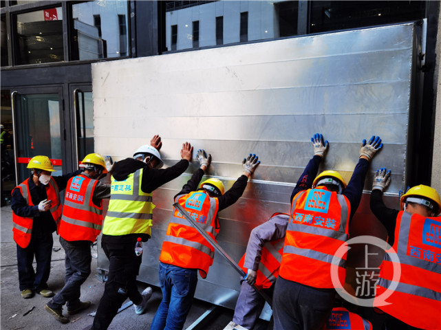
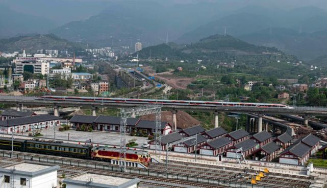

|
짱! Dianjiang 카운티, 종자 기지 "국가 대표팀 결선 진출 |
| 4 월 10 일, 당소평 () 구위 서기 () 가 충칭 국제 물류 허브 단지 건설 작업을 조사하였다. |
|  |
 |
| 충칭시 공공자원거래망은 "화중과학기술대 동제대병원 부속협화병원 충칭병원 토양오염 조사" 를 발표했다. |
충칭은 2022 년 첫 의료보험 행정법 집행의 전형적 사건이 위장 진료, 교환 프로젝트 등 뉴스통기회 현장을 통보했다. |
|  | 소비를 늘리다! 이런 큰 소비 자신감을 높이고 소비의 지속적인 온난화를 촉진하다.수법들이 너를 붙잡았니? |
 |
제 1 회 천중고교 반컬트 경고 선전과 반컬트 코프 지식네트워크 상금 퀴즈 행사가 본격적으로 시작됐다. 10 할 수 있어요 |
 |
충칭 liangjiang 새로운 지구: "창조" 개방 경제의 새로운 활력 |
 |
2022 년 2 급 건설사 시험에는 어떤 변화가 있을 것인가? |
 |
100 개 연대사 이야기 (17): 거점 작업 청춘 황중 |
 |
충칭 Kun 고속철도 투 오강 대교 주요 부두 연속 단면 빔 주입 |
중신 인터커넥트 재결과 30 개 시범사업 현장 계약도. |
 |
중신 인터커넥트 재결과 30 개 시범사업 현장 계약도. |
 |
중신 인터커넥트 재결과 30 개 시범사업 현장 계약도. |
싱가포르 항공 (충칭) 보세 항공 재료 분배 센터가 충칭에 설립되었습니다. |